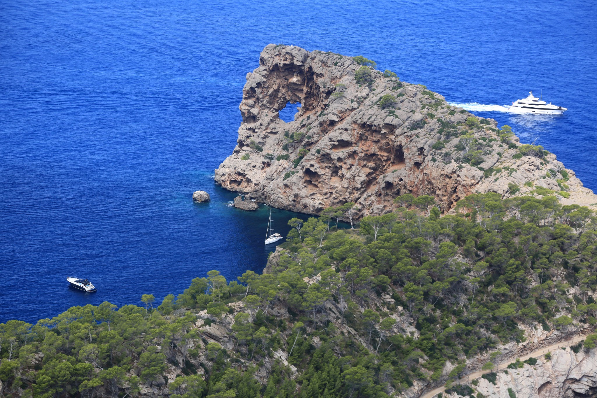

Na Foradada (o Sa Foradada) es una de las estampas más emblemáticas y fotografiadas de la
Serra de Tramuntana (Mallorca). Esta icónica península rocosa, situada entre Valldemossa y
Deià, debe su nombre al característico agujero circular de unos 18 metros de diámetro que la
erosión del viento y el mar ha tallado en su cima.